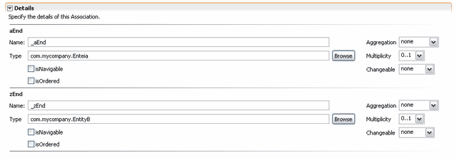

First, please make sure the Tigerstripe Perspective is active.
To edit an existing Association Artifact, simply select its corresponding entry in the Tigerstripe Explorer, and double-click to open it in an editor. Association Artifacts are made of the following details:
Once you have edited your changes, make sure you Save your changes for them to be taken into account by Tigerstripe. To save, either select the Save option from the File menu entry in the menubar, use the save icon in the toolbar, or hit ctrl-s.To edit this association's end details, expand the End Details section. The section looks as shown below:

Each end of the association can be further edited. In particular you will find the following details for each end:
- Name: The name of that end
- Description: a textual description of the end. This field documents the purpose of the end. You can use HTML in to the field as it will be propagated into the web site where the project is to be published, as well as in the generated code. For more details on Artifact documentation, refer to Tigerstripe Model Documentation.
- Type: the fully qualified name of this end of the association
- Multiplicity: the multiplicity for this end of the association. Fixed multiplicities only are supported: 0, 0..1, 0..*, 1..*, *
- Changeable: whether this end of the association shall be changeable. The following types are supported: none, frozen, addOnly.
- Aggregation: the aggregation type for this end of the association. The usual aggregation types are supported: none, shared, composite.
- Visibility: defines the visibility of the end.
Qualifiers
- isNavigable: whether this end of the association shall be navigable.
- isOrdered: whether this end of the association shall be ordered.
- isUnique: .
- Stereotypes : Stereotypes that have a scope of "Association End" can be applied to the end. For more info see the section on Stereotypes.